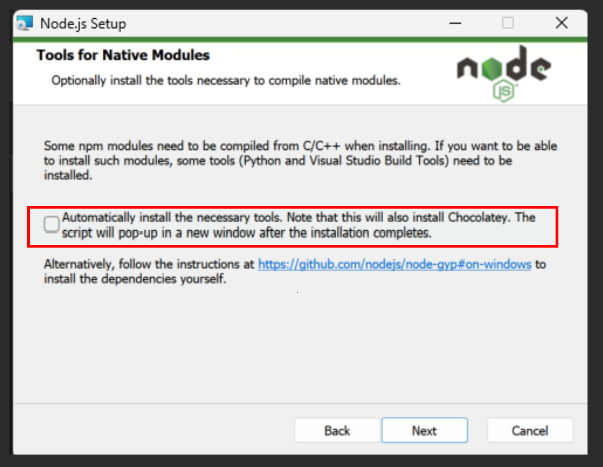

系統需求
- 作業系統：Windows 11
- 硬體需求：至少 1GB RAM
- 網路連線：需要網路連線以下載安裝包
安裝步驟
1. 下載 Node.js
前往 Node.js 官方網站 並選擇適合您作業系統的安裝包下載。
2. 安裝 Node.js
請依照以下步驟進行安裝：
- Windows：雙擊下載的 .msi 檔案，並依照安裝精靈的指示進行安裝。

注意：請勿勾選「自動安裝必要工具」選項，因為這會安裝許多本程式不需要的開發工具。
3. 安裝 markmap-cli
安裝完 Node.js 後，您可以使用 npm 來安裝 markmap-cli。請在終端機或命令提示字元中輸入以下指令：
npm install -g markmap-cli這將全域安裝 markmap-cli，讓您可以在任何地方使用它。
4. 驗證安裝
安裝完成後，您可以在終端機或命令提示字元中輸入以下指令來驗證 markmap-cli 是否安裝成功：
npx markmap-cli --version如果顯示版本號碼，則表示安裝成功。
常見問題
- 如何解除安裝 Node.js？
- Windows：透過控制台的「程式和功能」進行解除安裝。
- Node.js 和 npm 有什麼區別？
Node.js 是一個 JavaScript 執行環境，而 npm 是 Node.js 的套件管理器，用於安裝和管理 Node.js 的函式庫和工具。